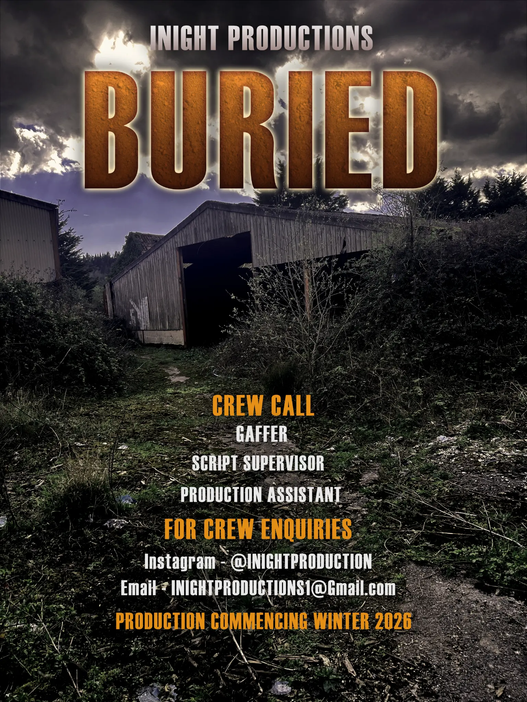
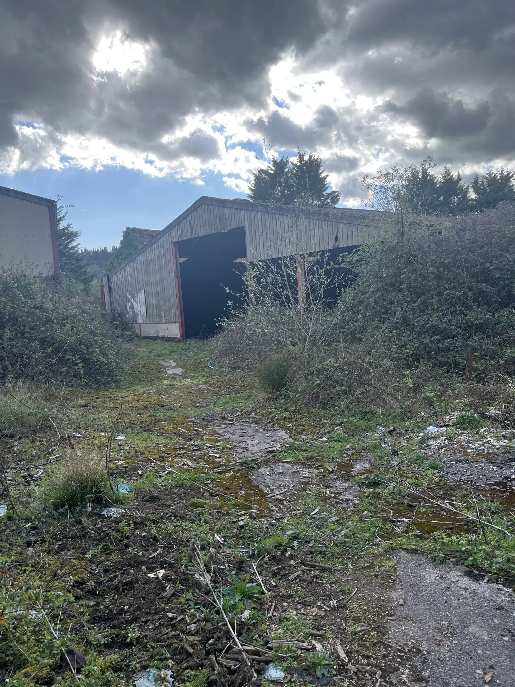
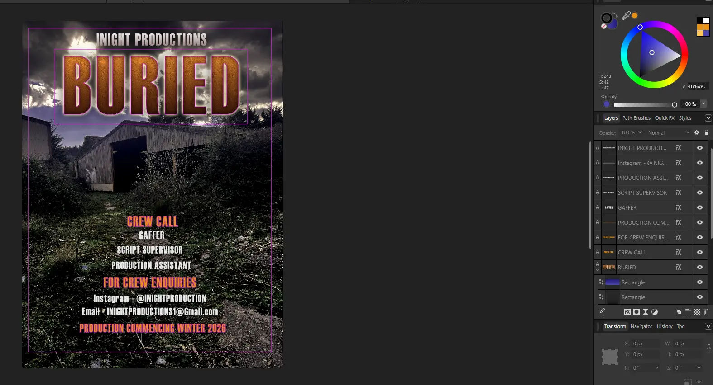

Graphic Design · Client Work
Buried
A published crew-call poster for an independent film production, transforming a client-supplied photograph into a darker and more professional thriller image.

The brief
The client wanted a crew-call poster with dark tones and a more professional finish than the original photograph. The design needed to advertise the available production roles clearly while establishing the film’s thriller atmosphere.
Design approach
I colour graded the client-supplied photograph to deepen the shadows, reduce the daylight feeling and emphasise the threatening sky and abandoned location. A saturated orange title contrasts with the darker environment, creating a clear focal point.
I applied a distressed, earth-like texture to the title to reinforce the meaning of Buried. A bright backlight separates the lettering from the storm clouds and gives it greater depth, while a centred information hierarchy keeps the crew roles and contact details readable.
Before and after

Process
The poster was developed in Affinity Designer using separate typography, colour and effect layers. The working view shows the title treatment, layout guides and structured layer stack used to keep the design editable.

Outcome
The client published the completed poster on Instagram to support crew recruitment. The independent production did not subsequently progress to filming, but the poster remains a completed piece of commissioned design work.